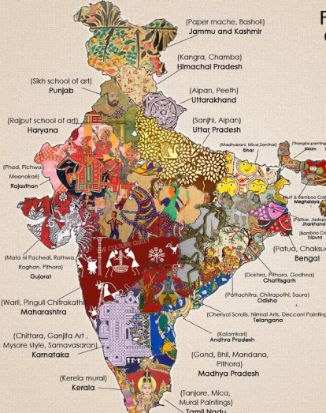
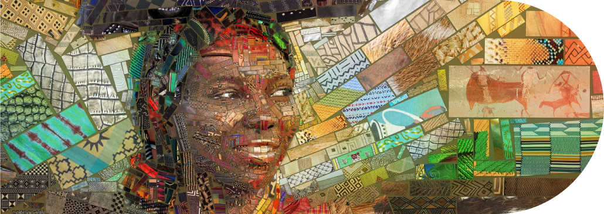
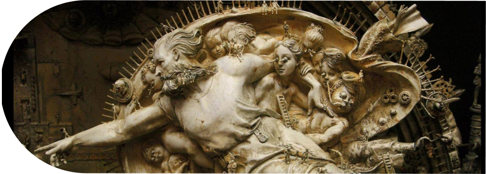
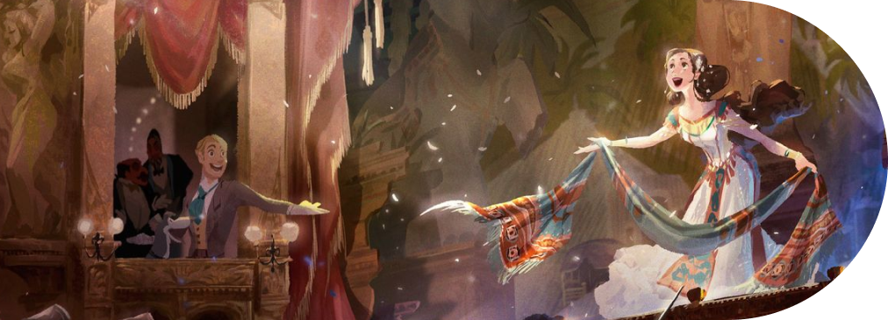
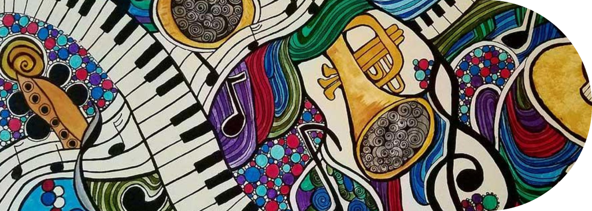

The Artment pays tribute to traditional art forms.

7 Indian Art Forms And Their Impact On Modern Art Scene

Painting
Painting is a visual art, which is characterized by the practice of
applying paint,pigment, color or other medium to a solid surface (called
the "matrix" or "support"). The medium is commonly applied to the base
with a brush, but other implements, such as knives, sponges, and
airbrushes, can be used.

Sculpture
Sculpture is the branch of the visual arts that operates in three
dimensions. It is one of the plastic arts. Durable sculptural processes
originally used carving and modelling, in stone, metal, ceramics, wood
and other materials but, since Modernism, there has been an almost
complete freedom of materials and process.
Literature
Literature is a form of art in which the author communicates ideas to
readers, who then connect to the story on an individual level.
Literature is itself connected to a number of other art forms and should
be understood as part of a broader artistic, historical, and cultural
conversation.
Architecture
architecture, the art and technique of designing and building, as
distinguished from the skills associated with construction. The practice
of architecture is employed to fulfill both practical and expressive
requirements, and thus it serves both utilitarian and aesthetic ends.

Theater
Theatre is a collaborative art form which combines words, voice,
movement and visual elements to express meaning. The field of theatre
encompasses not only live improvised and scripted work, but also
dramatic forms such as film, television and other electronic media.
Film
Arthouse film, also known as art cinema, is a type of movie that strays
from the mainstream commercial path to create a unique artistic
expression. These films are typically characterized by their serious,
often experimental nature, prioritizing directorial creativity and
artistic vision over mass-market appeal.

Music
Music is the art form that combines rhythm and sound to form a
functional melodic line. Music itself transcends time, space, and
cultures. Music can carry a mood without speaking any specific words. It
can also be captured and recorded in a written universal language unique
unto any other art form.